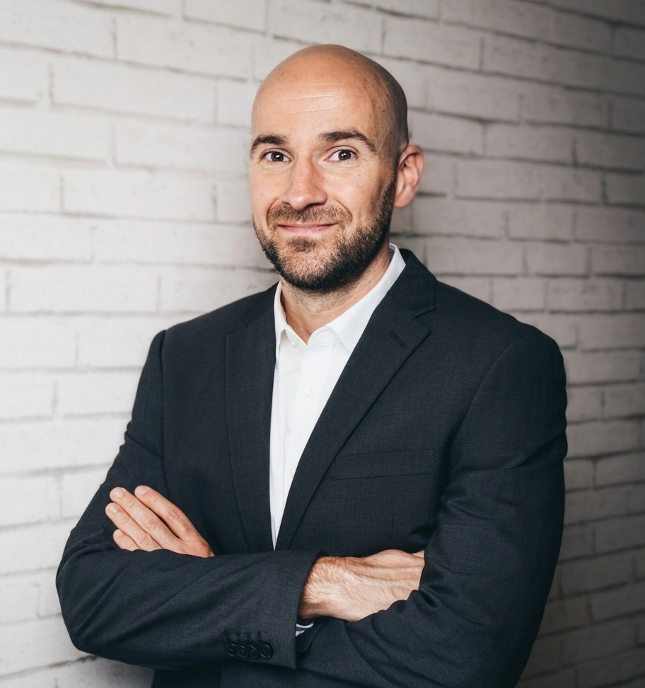
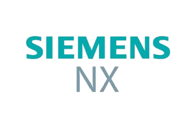
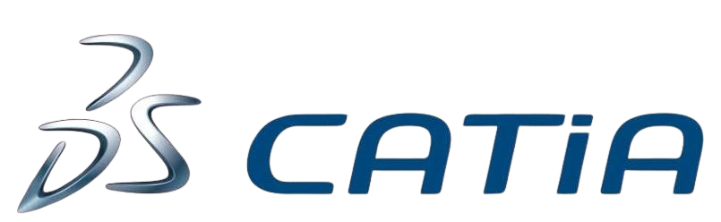

Konstruktionsingenieur
Region Stuttgart
Freiberuflicher Konstruktionsingenieur für anspruchsvollen Maschinenbau,
Automotive und Wehrtechnik. Experte für komplexe Baugruppen in PTC Creo
Parametric und nahtlose SAP/PLM-Integration.
Sofort
einsatzbereit – vor Ort und remote.
Erfahrung mit etablierten Systemen



